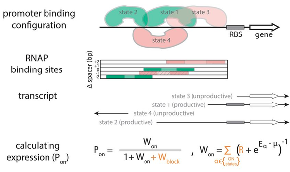

01
Bacterial promoters
Promoters set how strongly a gene is expressed. We build biophysical models that predict expression directly from DNA sequence, and use them to ask how promoters evolve.
- Predicting gene expression levels directly from sequences
- Dynamics of gene expression and their consequences
- Role of promoter architecture in genotype–phenotype mapping
- Consequences of changing expression levels of biological systems (e.g. efflux pumps, metabolic genes)
